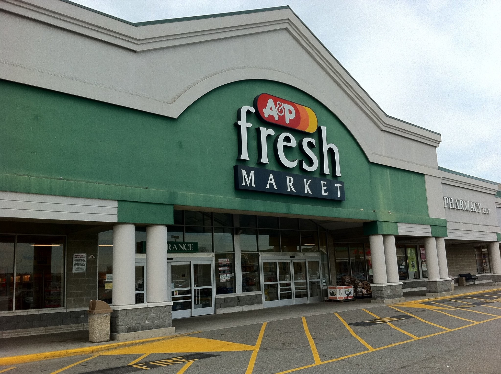

The A&P Years (1997-2015)
I was a Senior Graphic Designer at A&P (1859-2015) who was the top assistant to the Production Manager and Creative Director on the production side of things. My job was to create and correct "print" circulars (and more) that promoted store sales on a weekly basis under tight deadlines. Fully armed, I managed a group of 10 Artists when that time was needed and would report in to the Production Manager and Creative Director to keep them in the loop. The very busy Production Manager had to oversee the entire department so she would delegate authority and certain powers to me to oversee the companies successful daily vision. I also met with other Stakeholders in other Departments, spoke to Printers and Distributors when needed, trained Staff and prepared documents for release when that time came. I also designed and corrected circular pages, ROP’s, bagstuffers, signage and even had some time for lunch when I wasn’t proofreading.
It is important to note that the Supermarkets Waldbaum's and Superfresh were part of the A&P Family too which I had a handle on as well doing the same responsibilities. In the last year there, I took on the role of Production Manager because the last Manager there left for greener pastures to take care of her family as A&P unfortunately went out of business at the end of 2015.
